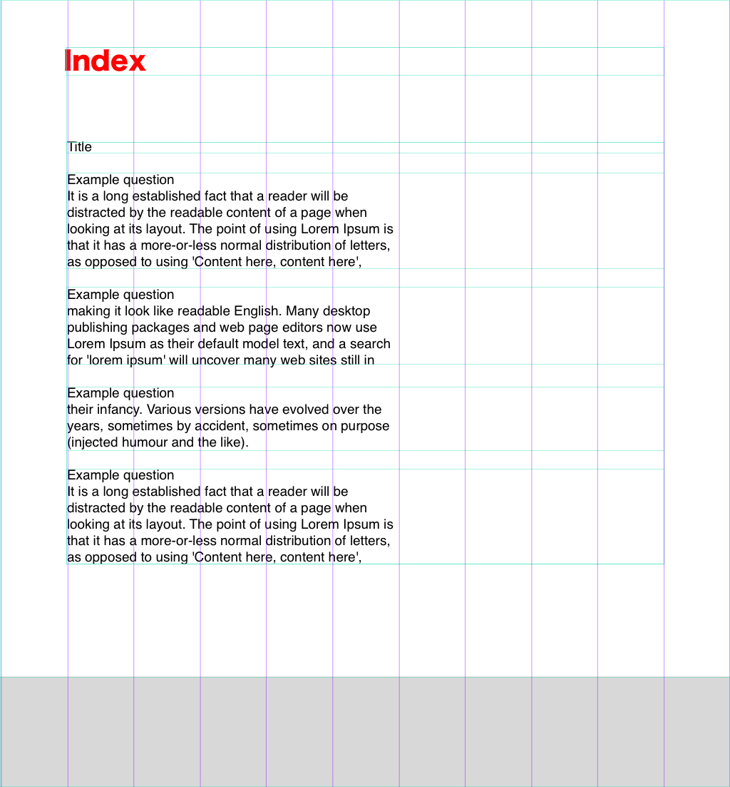
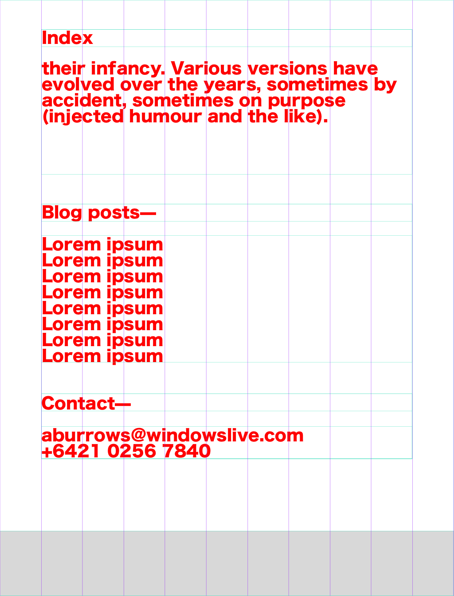
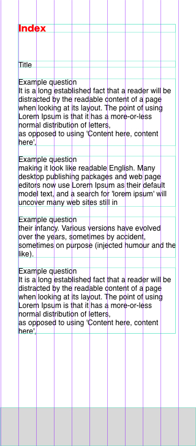
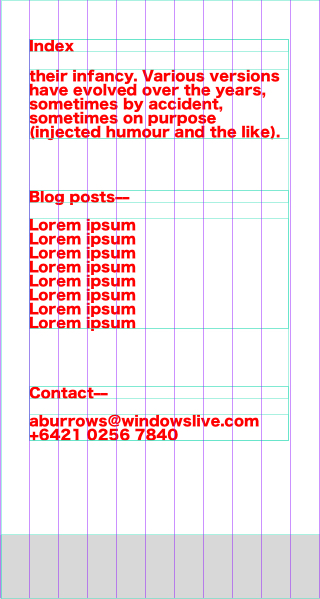

3.2 design to web
> What is a responsive site? why is responsiveness important?
A responsive site is defined by the way it appears on different screen sizes, a responsive site will behave in a
way that makes it appropriate.
Responsiveness is important to have your site accessible. If your site is not responsive, then you will not have
access to it properly from all devices.
> What is mobile first design? why is it important?
Mobile first design is where you create the design and structure to work perfectly on a mobile sized screen.
This is important for the planning of a website so that you don't run out of options when you add in more
content and features.
> What are frameworks? and what are the pros and cons?
Frameworks are pre-designed and built structures and styles that are used as a placeholder for
more specific design.
The advantages of frameworks are they provide a fast and efficient way to have a structure in place
for your content to be housed in.
The disadvantage is you have to eventually go back and change the design to fit the original intent
of the site, and to make it more interesting.
> What are wireframes? and why do we use it?
Wireframes are quick sketches done for the purpose of planning out how a site will be laid out.
We use them to organise which parts of the site will be easy and hard. The building of the site
can then be created on a list of priorities.




> What were the aspects of your wireframes you found difficult to implement? why?
I found it difficult to implement the responsiveness and the consistency of margins.
This was because of my attempt to be have a better practice at understanding how boxes
react to each other. If I come across this problem again I will now be able to fix it
more easily.
<